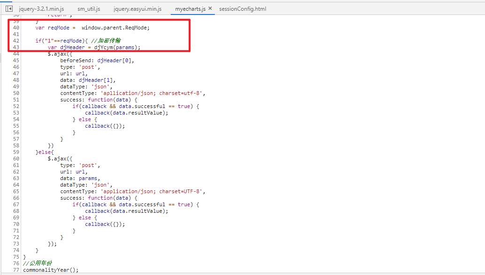
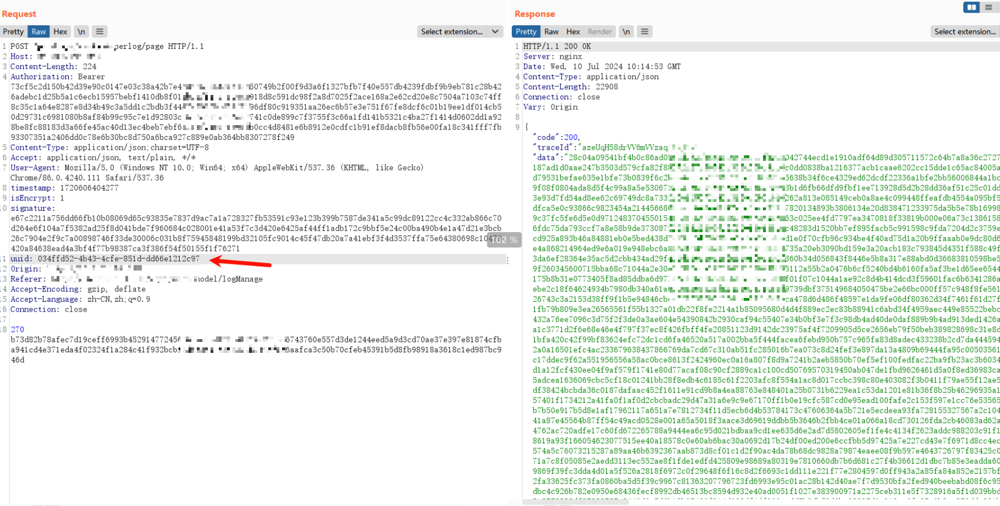

前言
目前越来越多的web系统开始做http数据包的签名了，有的甚至会加上防重放功能，又或者直接对数据包的请求体，响应体进行加密。这里我先叫这种为防重放防篡改机制。
理想情况下，用bp抓到的数据包，只能发送一次，同时也不能修改参数，路径，token（cookie）等。这对于我这种脚本小子来说是致命打击，无法使用xray这些漏扫工具扫描一把梭，也没办法用bp插件。但毕竟是理想情况，在实际总有一些开发不听指挥，又或者是沟通不到位，理解出现偏差，导致这样的防重放防篡改机制出现问题。这篇笔记就是记录一下一些绕过防重放防篡改机制的思路以及绕不过去的时候，如何解决防重放防篡改机制。
先简单说一下防重放防篡改机制，下面的图是一种实现方式。简单来说就是nonce随机值参数和timestamp时间戳来做防重放，sign签名来做防篡改。也有那种直接对请求参数全部加密的，又或者是加上nonce、timestamp、sign校验后，再加密的。
这里是一些案例截图
系统中存在timestamp、nocestr、sign字段，实现了防重放防篡改
比较极端的，请求响应全部加密。
绕过
上传功能点
由于上传文件数据包的特殊性，有些开发可能不会把防重放防篡改机制覆盖到上传功能点。所以一般文件上传点不会有防重放防篡改。
同时处理两套参数
有的开发可能会为了方便调试，允许系统同时接受两套参数。比如下图，请求响应全部加密了，看似很麻烦，但是直接去js里找一个加密前的参数发过去，就会发现响应也成了明文。
对于这种可以同时接受密文参数和明文参数的系统。一般可以通过修改替换js文件内容来直接绕过，只要找到他的加密函数，然后把返回结果替换一下就好了。比如说这个系统，加密函数为Rcp.jiami (这命名方法让我想起了初学代码的那个自己，下面还有一个jiemi) 。读一下上下文，直接把响应代码换成 return JSON.stringify(JSON.parse(s)["D"]); 这时候bp抓到的包就都是明文了。
也有那种走if判断的，给他修改一下判断条件也可以绕过，找到reqMode的定义，然后F12里面window.sessionStorage.ReqMode=2修改一下即可。

请求头特殊字段
也有的开发会谨慎一些，不会直接让系统同时接收两套参数，他可能会在请求头中设置一个特殊参数，来控制防重放防篡改机制的开关，又或是控制系统接受明文还是密文参数。可以看下面这个数据包，有X-Request-Sign、X-Acloud-Data-Sign、X-Request-Time、X-Acloud-Crypto-Serial-No一堆校验参数。
但是仔细一点可以发现，他的Content-Type并不是传统的application/json，而是application/x-acloud-sm4-public-json。把这个字段给改成原来的application/json，然后再构造一下明文body数据包发送，就得到了正常返回。而且防重放防篡改也一起绕过了。
防重放绕过
nonce值过期
一个已经触发防重放的数据包，可能等待一会后就可以重新发送。存在这个问题的原因可能是和重放的实现原理有关，系统把数据包解密后，拿到其中的nonce值存入redis中，之后收到带相同redis值的数据包就判定为重放。但nonce值不可能一直存在redis中，过了几分钟后，redis把这个值又给删掉了，这时候就又可以发送这个数据包了。这里的数据包，3分钟后又可以重放了。不过这种方式用处不大。
修改nonce值
有的开发可能在处理签名或者加密的时候，把nonce值排除在外，这种时候单独修改nonce值即可，绕过防重放。下面这个数据包起nonce值的作用的字段是uuid，修改uuid与之前不同即可绕过防重放。

正面对抗
寻找处理函数
当系统的防重放防篡改无法绕过时，就需要分析js代码了，这里我暂时给分为两种不同的情况:
第一种
第一种是请求体中，header增加了别的字段，或者body中有别的参数，用这些字段或者参数来实现防重放防篡改，数据包一般长这样：
碰上这种很好解决，直接在F12全局搜索相关关键字，比如sign、nonce、timeSec、randomAndT、nocestr等。
以下面这个数据包为例，存在三个校验字段，timestamp、nocestr、sign。timestamp一看就是时间戳，很好生成，那分析js的目的就是两点
- nocestr是如何生成的
- sign签名如何生成
直接搜索sign、timestamp、nocestr。
三个搜索结果取一下交集就大概能判断出来是哪个文件里进行处理的了，根据经验，一般是app.js、index.js这样的文件。
还有一个办法是可以打开Any XHR or fetch，调出Call stack，然后看一下右边用了哪些文件，也可以排除一部分文件。
在排除了不可能的文件后，剩下的就是可能了，之后打开剩下的搜索结果，根据代码上下文，在所有可能的地方都打上断点。然后建议找一个查询的功能点，测试一下流程是否被中断。
在点击查询后，代码停在了 const nocestr = uuid();这一行uuid();函数跟进后就可以看到函数的内容了。这时候用CDP、jsRPC或者抠JS都可以。
然后回到主流程继续往下找sign如何生成，可以看到先是把timestamp和nocestr加到请求参数中，然后进行排序，之后使用forEach把参数拼接成key=value的形式
逐步分析配合Console或者右边的Scope更直观。
最后再用 join 在每个key=value中添加&，然后丢给(0, _jsMd.default)函数，至于这个函数是什么，可以直接跟进。像这个直接悬停在代码上就能看到是md5
另外还有一种类似的，只不过把请求参数给加密了，如下图，这种的思路和上面这种类似，无非是把搜索关键字换成 param、然后还有一些通用的比如encrypt、encode、AES、DES、RSA、sm2、sm4、sm4、md5、public_key、private_key、key、iv、jiami之类的，也可以试着在后面加上(，来缩小范围，比如encode(、encrypt(。
第二种
第二种是请求体中，header正常，body为加密内容，且不方便像第一种方式那样搜索关键字来定位处理函数的，比如下面这两种。
这种会稍微复杂一点，不过也是先用encrypt、encode、AES、DES、RSA、sm2、sm4、sm4、md5、public_key、private_key、key、iv、jiami之类的关键字进行搜索，也可以试着在后面加上(，来缩小范围，比如encode(、encrypt(。比如下面就搜到了，然后点个搜索，中断就下来了，然后就可以去上下文分析代码了。

如果没搜到，或者搜到了，断点没下来，那就要甩最后的办法了。
打开Any XHR or fetch，调出Call stack，然后在右边的每个地方都打上断点，逐步往回观察参数是什么时候变成密文的。这个笨办法会比较耗时耗力，有时候可能还会看漏，所以要很仔细，以上面那个系统为例，打上XHR断点了，右边的堆栈主要是app.js和56.js。可以用二分法从中间开始断一下看看也没有请求参数，是明文还是密文。这里我选的t.xjyPostRequest app.201c6403c77...rmattedl:189293这个。打上断点
可以看到在这里请求参数t还是明文，所以继续取(anonymous) app.201c6403c77..ormatted:25196和t.xjyPostRequest app.201c6403c77...rmattedl:189293中间的断点(anonymous) app.201c6403c77..ormattedl:53688。
依然是明文，继续断。这次是e.exports app.201c6403c77...rmattedl:26103。
这里就可以看到已经是密文了，所以加密的处理函数在(anonymous) app.201c6403c77..ormattedl:53688和e.exports app.201c6403c77...rmattedl:226103中间。
这时候，然后再在XmWM.s.request app.201c6403c77..ormattecd:86394打赏断点，最后缩小范围。

在XmWM.s.request app.201c6403c77..ormattecd:86394中，可以看到此时n中的参数还是明文，而之后的e.exports app.201c6403c77...rmattedl:226103就已经是密文了，所以加密处理函数只能是在这个异步请求中了。
n = n.then(t.shift(), t.shift());这一行的大致意思是执行t数组中的函数，在console中输入t即可看到其内容，逐步加上断点。其中第三个元素函数里面就是e.exports app.201c6403c77...rmattedl:226103这个断点，所以只需要看前面两个元素，跟进去打上断点。
第一个元素函数：
第二个元素函数：
然后再重新开始，先是停在了第一个元素的函数里面，此时参数还是明文，F10一步一步条下去，然后就找到了处理加密的代码了。之后就可以开始写脚本了。
1 | { |
编写脚本
（这里还没写）
目前有两种使用脚本的方式，以实现在bp中明文显示以及自动加密解密的效果，一种是使用autodecoder插件和py flask，另一种是使用MITM设置上下游代理。
而在脚本中，如何调用处理函数也有好几种方式，一种是扣JS补环境（很麻烦），一种是自己直接写加解密函数（可能有局限性），一种是用CDP远程调用（目前来说我用得最多的），还有一种是JSRPC（还没学会怎么使用）。